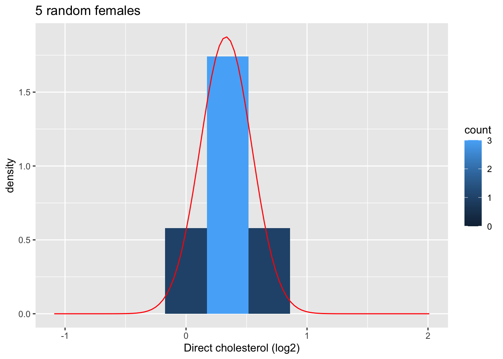
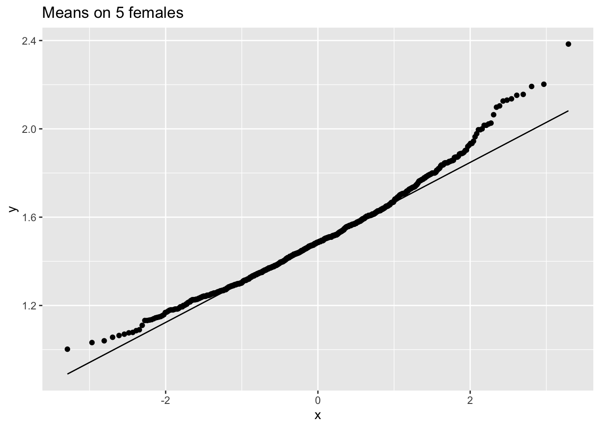

1 Introduction
1.1 Population
The aim of a scientific study is to draw conclusions on the general population.
Here, we study the effect of captopril on the blood pressure of patients with hypertension.
We will collect data and we will model the data
Therefore, we always have to translate the research question into an effect size that can be estimated with a model parameter or a combination of model parameters.
e.g. the population mean \[E(X)=\mu\]
Does the blood pressure decreases on average after administering captopril to patients with hypertension?
1.2 Overview
- Experimental Design & Data Exploration
- Point estimators (Estimation)
- Interval estimators (Statistical inference)
- Hypothesis tests (Statistical inference)
2 Experimental Design
- 15 patients were drawn at random from the population of patients with hypertension
- pre-test/post-test design: the systolic and diasystolic blood pressure are measured before and after administering captopril
- Advantage: we can assess the effect of administering captopril on the blood pressure for each individual patient.
- Disadvantage?
3 Data exploration and Descriptive Statistics
captopril <- read_csv("https://raw.githubusercontent.com/GTPB/PSLS20/master/data/captopril.txt")
head(captopril) id SBPb DBPb SBPa DBPa
Min. : 1.0 Min. :146.0 Min. : 98.0 Min. :129 Min. : 82.0
1st Qu.: 4.5 1st Qu.:163.5 1st Qu.:103.0 1st Qu.:146 1st Qu.: 98.0
Median : 8.0 Median :174.0 Median :112.0 Median :157 Median :103.0
Mean : 8.0 Mean :176.9 Mean :112.3 Mean :158 Mean :103.1
3rd Qu.:11.5 3rd Qu.:192.5 3rd Qu.:121.5 3rd Qu.:168 3rd Qu.:108.0
Max. :15.0 Max. :210.0 Max. :130.0 Max. :201 Max. :125.0 captopril_tidy <- captopril %>% gather(type, bp, -id)
captopril_summary <- captopril_tidy %>%
group_by(type) %>%
summarize(
mean = mean(bp, na.rm = TRUE),
sd = sd(bp, na.rm = TRUE),
n = n()
) %>%
mutate(se = sd / sqrt(n))
captopril_summarycaptopril_summary %>%
ggplot(aes(x = type, y = mean)) +
geom_bar(stat = "identity") +
geom_errorbar(aes(ymin = mean - se, ymax = mean + se), width = .2) +
ylim(0, 210) +
ylab("blood pressure (mmHg)")- This figure is not informative! It does not show the raw data.
We see that a lot of the space that was taken by the barplot does not contain data!
captopril_tidy %>%
ggplot(aes(x = type, y = bp)) +
geom_boxplot(outlier.shape = NA) +
geom_point(position = "jitter")This plot would have been informative if the data was gathered on different individuals.
However, the blood pressures are measured op the same subject!
We will make a plot by filtering the systolic blood pressures
captopril_tidy %>%
filter(type %in% c("SBPa", "SBPb")) %>%
mutate(type = factor(type, levels = c("SBPb", "SBPa"))) %>%
ggplot(aes(x = type, y = bp)) +
geom_line(aes(group = id)) +
geom_point()- We have paired data. So we might estimate the effect of the treatment directly by comparing the blood pressure after treatment to the blood pressure before the treatment.
captopril$deltaSBP <- captopril$SBPa - captopril$SBPb
captopril %>%
ggplot(aes(x = "Systolic blood pressure", y = deltaSBP)) +
geom_boxplot(outlier.shape = NA) +
geom_point(position = "jitter") +
ylab("Difference (mm mercury)") +
xlab("")captopril %>%
summarize(
mean = mean(deltaSBP, na.rm = TRUE),
sd = sd(deltaSBP, na.rm = TRUE),
n = n()
) %>%
mutate(se = sd / sqrt(n))Pre-test/post-test design: Effect of captopril in sample using \(X=\Delta_\text{after-before}\)!
How will we model \(X=\Delta_\text{after-na}\) and estimate the effect of captopril?
The systolic blood pressure differences are approximately normally distributed.
4 Estimation
No substantial deviations from normality
We can assume that the differences \(X \sim N(\mu, \sigma^2)\).
Effect of captopril in the population is captured by the average blood pressure difference \(\mu\).
The average blood pressure \(\mu\) in the population can be estimated using the sample mean \(\bar x\)=-18.93
The standard deviation \(\sigma\) with the sample standard deviation \(\text{S}\)=9.03.
Is the effect that we observe in the sample large enough to conclude that there is an effect of the captopril treatment on the blood pressure at population level?
Our estimates will change from sample to sample!
How are the estimators \(\bar X\) and \(S\) distributed?
4.1 Point estimator the sample mean
Suppose that \(X\) is a random sample from the population and assume that \(X \sim N(\mu,\sigma^2)\)
Estimate \(\mu\) based on sample \(X_1,...,X_n\), using the sample mean \[\bar X = \frac{X_1+ X_2+ ... + X_n}{n} = \frac{\sum_{i=1}^{n} X_i}{n}\] of random variables \(X_1,X_2, ..., X_n\).
Sample mean \(\bar X\) is a random variable that varies from sample to sample
Study the theoretical distribution of the sample mean to get insight
- in how the sample mean can vary in a new similar study
- how far \(\bar X\) can be from the population mean \(\mu\)
4.1.1 Overview
- The sample mean is unbiased
- Precision of sample mean
- Distribution of sample mean
4.1.2 The sample mean is unbiased
We can generalize our observations based on the sample towards the population if the estimate is good approximation of the population value.
A representative sample is required to generalize the results from the sample towards the population
Avoid bias (so that the population mean is not systematically under or overestimated)
Report how the sample is taken!
Randomisation!
Draw the subjects at random from population so every subject has the same probability to end up in the sample.
Subjects with hypertension are sampled at random from the population
Simple random sample: \(X_1,...,X_n\) for characteristic \(X\)
\(X_1,...,X_n\) have same distribution
They have same mean \(\mu\) and variance \(\sigma^2\)
\(E(X_1)=...=E(X_n)=\mu\) and \(\text{Var}(X_1)=...=\text{Var}(X_n)=\sigma^2\)
\(\bar X\) is an unbiased estimator for \(\mu\)
Click to see proof
\[\begin{eqnarray*} E(\bar X) &=& E \left(\frac{X_1+ X_2+ ... + X_n}{n}\right) \\ &= & \frac{E(X_1)+ E(X_2)+ ... + E(X_n)}{n} \\ &=& \frac{\mu + \mu + ... +\mu}{n} \\ &= & \mu \end{eqnarray*}\]
4.1.3 Imprecision/standard error
Also for representative samples the results are imprecise.
Different samples from the same population give different results.
We illustrated this by using the NHANES
- We will draw 15 females at random from the NHANES study and we will register their log2 direct cholesterol values
- We repeat this 50 times to assess the variation from sample to sample
- We will plot the boxplot for each sample and will indicate the mean
library(NHANES)
fem <- NHANES %>%
filter(Gender == "female" & !is.na(DirectChol)) %>%
select("DirectChol")
n <- 15 # number of subjects per sample
nSim <- 50 # number of simulations
femSamp <- matrix(nrow = n, ncol = nSim)
for (j in 1:nSim) {
femSamp[, j] <- sample(fem$DirectChol, n)
if (j < 4) {
p <- data.frame(log2(femSamp)) %>%
gather(key = "sample", value = "log2cholesterol") %>%
ggplot(aes(x = sample, y = log2cholesterol)) +
geom_boxplot(na.rm = TRUE) +
stat_summary(
fun = mean, geom = "point",
size = 3, color = "red", na.rm = TRUE
) +
geom_hline(yintercept = mean(fem$DirectChol %>% log2())) +
ylab("cholesterol (log2)")
print(p)
}
}data.frame(log2(femSamp)) %>%
gather(key = "sample", value = "log2cholesterol") %>%
ggplot(aes(x = sample, y = log2cholesterol)) +
geom_boxplot() +
stat_summary(
fun = mean, geom = "point",
size = 3, color = "red", na.rm = TRUE
) +
geom_hline(yintercept = mean(fem$DirectChol %>% log2())) +
ylab("cholesterol (log2)")We observe that the mean nicely fluctuates around the population mean.
Copy the code, increase the sample size to 100 subjects and observe what happens!
4.1.4 How to do this based on a single sample?
Insight in how close we can expect \(\bar X\) to \(\mu\)?
How varies \(\bar X\) from sample to sample?
Variability on \(\bar X\)
We have to determine this based on a single sample!
We need to make assumptions
We assume that the random variables \(X_1, X_2, ..., X_n\) originate from \(n\) independent subjects.
For the captopril study we had dependent observations.
- Blood pressure measurements before (\(Y_{i,before}\)) and after (\(Y_{i,after}\)) administering captopril for the same subject \(i=1,\ldots,n\).
- We turned them into n independent measurements by taking the difference \(Y_{i,after}-Y_{i,before}\)
4.1.5 Variance estimator for \(\bar X\)
\[\sigma^2_{\bar X}=\frac{\sigma^2}{n}\]
The standard deviation of \(\bar X\) around \(\mu\) is \(\sqrt{n}\) times smaller that the deviation around the original observations \(X\).
The more observations we have the more precise \(\bar X\).
Click to see proof
\[\begin{eqnarray*} \text{Var}(\bar X)&=&\text{Var} \left(\frac{X_1+ X_2+ ... + X_n}{n}\right) \\ &= & \frac{\text{Var} (X_1+ X_2+ ... + X_n)}{n^2} \\ &\overset{*}{=} & \frac{\text{Var}(X_1)+ \text{Var}(X_2)+ ... + \text{Var}(X_n)}{n^2} \\ &=& \frac{\sigma^2 + \sigma^2 + ... \sigma^2}{n^2} \\ &= & \frac{\sigma^2}{n}. \end{eqnarray*}\]
(*) this is based on the assumption of independence. \[\text{Var}[X_1 + X_2] = \text{Var}[X_1] + \text{Var}[X_2] + 2 \text{Covar}[X_1,X_2]\]
- With \(Covar[X_1,X_2]=0\) when \(X_1\) and \(X_2\) are independent.
Definition: standard error
The standard deviation of \(\bar{X}\) is \(\sigma/\sqrt{n}\) and is also referred to as the standard error of the mean. Generally one refers to the standard deviation of an estimator for a particular parameter \(\theta\) with the term standard error of the estimator, which is denoted as \(SE\).
4.1.6 Captopril example
\(n = 15\) differences in systolic blood pressure
Suppose that the standard deviation of the blood pressure differences in the population is \(\sigma = 9.0\) mmHg
Then, the standard error (SE) on the average systolic blood pressure differs \(\bar X\) becomes:
\[ SE= \frac{9.0}{\sqrt{15}}=2.32\text{mmHg.} \]
Generally \(\sigma\), and thus the SE on the sample mean are unknown.
So we also have to estimate the standard deviation of the sample to obtain the standard error
Estimator: \(SE=S/\sqrt{n},\)
with \(S^2\) the sample variance of \(X_1,...,X_n\) and \(S\) the sample standard deviation
For the captopril example we obtain:
[1] 2.3308834.1.7 Standard deviation vs standard error
4.1.7.1 Illustrate via repeated sampling
Different sample sizes: 10, 50, 100
Draw 1000 samples per sample size from the NHANES study, for each sample we calculate
- The mean
- The sample standard deviation
- The standard error
We make a boxplot of the sample standard deviations and the standard errors for the different sample sizes
Instead of using a for loop we will use the sapply function which is more efficient. It takes a vector or a list as input and applies a function on each element of the vector or on each list element.
set.seed(1)
femSamp10 <- replicate(1000, sample(fem$DirectChol, size = 10))
femSamp50 <- replicate(1000, sample(fem$DirectChol, size = 50))
femSamp100 <- replicate(1000, sample(fem$DirectChol, size = 100))
## Calculate log2 and convert to data.frame
femSamp10_log2 <- data.frame(log2(femSamp10))
femSamp50_log2 <- data.frame(log2(femSamp50))
femSamp100_log2 <- data.frame(log2(femSamp100))
## Custom function to calculate summary statistics
calculate_stats <- function(x) {
x %>%
gather(sample, log2Chol) %>%
group_by(sample) %>%
summarize(
median = median(log2Chol, na.rm = TRUE),
mean = mean(log2Chol, na.rm = TRUE),
sd = sd(log2Chol, na.rm = TRUE),
n = n()
) %>%
mutate(se = sd / sqrt(n))
}
res <- rbind(
calculate_stats(femSamp10_log2),
calculate_stats(femSamp50_log2),
calculate_stats(femSamp100_log2)
)Means
We first illustrate the impact of sample size on the distribution of the means of the different samples
res %>%
ggplot(aes(x = as.factor(n), y = mean)) +
geom_boxplot() +
ylab("Direct cholesterol (log2)") +
xlab("sample size")- Note, that the variation of the sample means indeed reduces as the sample size increases. So the estimation gets more precise with increasing sample size.
Standard deviation
We now illustrate the impact of sample size on the distribution of the standard deviation of the different samples
res %>%
ggplot(aes(x = as.factor(n), y = sd)) +
geom_boxplot() +
ylab("standard deviation") +
xlab("sample size")The standard deviation remains similar across sample size. It is centred around the same value: the standard deviation in the population. Indeed increasing the sample size does affect the variability in the population!
Again we see that the variability of the standard deviation reduces with increasing sample size. So the standard deviation can also be estimated more precise with increasing sample size.
Standard error on the mean
Finally, we illustrate the impact of sample size on the distribution of the standard deviation on the mean of the different samples
res %>%
ggplot(aes(x = as.factor(n), y = se)) +
geom_boxplot() +
ylab("standard error") +
xlab("sample size")- The standard error, the estimator for the precision of the sample mean, however, reduces considerably with increasing sample size again confirming that the estimation of the sample mean gets more precise.
4.1.8 Normally distributed data
For normally distributed data we have multiple estimators for the population mean \(\mu\) e.g mean and median.
But, \(\bar{X}\) is the unbiased estimator of \(\mu\) with the smallest standard error
\(\bar{X}\) deviates less from the mean \(\mu\) than the median
We illustrate this for repeated sampling with sample size 10
res %>%
filter(n == 10) %>%
select(mean, median) %>%
gather(type, estimate) %>%
ggplot(aes(x = type, y = estimate)) +
geom_boxplot() +
geom_hline(yintercept = mean(log2(fem$DirectChol))) +
ggtitle("10 subjects")Next, we compare the distribution of mean and median in repeated samples of sample size 50.
4.1.9 Distribution of sample mean
- How varies \(\bar X\) from sample to sample?
- Distribution of \(\bar X\)?
- If \(\bar X\) is normally distributed the standard error has a good interpretation: the s.e. is the standard deviation of the sample mean.
- If the data \(X_i\) are normally distributed, the sample mean is also normally distributed.
\[X_i \sim N(\mu,\sigma^2) \rightarrow \bar X \sim N(\mu, \sigma^2/n)\]
4.1.9.1 NHANES: cholesterol
We illustrate this again with simulation using the NHANES study. The log2 cholesterol levels were normally distributed.
fem %>%
ggplot(aes(x = DirectChol %>% log2())) +
geom_histogram(aes(y = ..density.., fill = ..count..)) +
xlab("Direct cholesterol (log2)") +
stat_function(
fun = dnorm, color = "red",
args = list(mean = mean(log2(fem$DirectChol)), sd = sd(log2(fem$DirectChol)))
) +
ggtitle("All females in Nhanes study")fem %>%
ggplot(aes(sample = log2(DirectChol))) +
stat_qq() +
stat_qq_line() +
ggtitle("All females in Nhanes study")Evaluate distribution for samples with 5 subjects
set.seed(1)
femSamp5 <- replicate(1000, sample(fem$DirectChol, size = 5))
femSamp5_log2 <- data.frame(log2(femSamp5))
femSamp5_log2 %>%
ggplot(aes(x = X1)) +
geom_histogram(aes(y = ..density.., fill = ..count..), bins = 10) +
xlab("Direct cholesterol (log2)") +
stat_function(
fun = dnorm, color = "red",
args = list(mean = mean(femSamp5_log2$X1), sd = sd(femSamp5_log2$X1))
) +
ggtitle("5 random females") +
xlim(range(log2(fem$DirectChol)))
femSamp5_means <- colMeans(femSamp5_log2)
ggplot(data.frame(means = femSamp5_means), aes(x = means)) +
geom_histogram(aes(y = ..density.., fill = ..count..), bins = 15) +
xlab("Mean cholesterol (log2)") +
stat_function(
fun = dnorm, color = "red",
args = list(mean = mean(femSamp5_means), sd = sd(femSamp5_means))
) +
ggtitle("Means on 5 females")data.frame(means = femSamp5_means) %>%
ggplot(aes(sample = means)) +
stat_qq() +
stat_qq_line() +
ggtitle("Means on 5 females")Explore the distribution of the mean for samples of size 10
Now we explore the results for the sample size of 10.
We first illustrate the plot for the first sample.
femSamp10_log2 %>%
ggplot(aes(x = X1)) +
geom_histogram(aes(y = ..density.., fill = ..count..), binwidth = 0.5) +
xlab("Direct cholesterol (log2)") +
stat_function(
fun = dnorm, color = "red",
args = list(mean = mean(femSamp10_log2$X1), sd = sd(femSamp10_log2$X1))
) +
ggtitle("10 random females") +
xlim(range(log2(fem$DirectChol)))Next we look at the distribution of the sample mean over 1000 samples of sample size 10.
femSamp10_means <- colMeans(femSamp10_log2)
ggplot(data.frame(means = femSamp10_means), aes(x = means)) +
geom_histogram(aes(y = ..density.., fill = ..count..), bins = 15) +
xlab("Mean cholesterol (log2)") +
stat_function(
fun = dnorm, color = "red",
args = list(mean = mean(femSamp10_means), sd = sd(femSamp10_means))
) +
ggtitle("Means on 10 females")data.frame(means = femSamp10_means) %>%
ggplot(aes(sample = means)) +
stat_qq() +
stat_qq_line() +
ggtitle("Means on 10 females")So we confirmed that the mean is approximately normally distributed for studies with 5 and 10 females when the original data are approximately normally distributed.
4.1.9.2 Captopril study
For Captopril study the systolic blood pressure differences are approximatively normally distributed.
s.e.= 2.32 mm Hg
In 95 out of 100 studies with n = 15 subjects we expect the sample mean of the systolic blood pressure differences (\(\bar X\)) on less then \(2 \times 2.32 = 4.64\)mm Hg of the real population mean of the blood pressure differences (\(\mu\)).
4.1.10 Non-normally distributed data
When individual observations do not have a normal distribution, \(\bar X\) is still Normally distributed when the number observations are large enough.
How large does the sample needs to be for the Normal approximation to work?
This depends on the skewness of the distribution!
NHANES: cholesterol
- When can evaluated this in the NHanes study if we do not log2 transform the data.
ggplot(fem, aes(x = DirectChol)) +
geom_histogram(aes(y = ..density.., fill = ..count..)) +
xlab("Direct cholesterol") +
stat_function(
fun = dnorm, color = "red",
args = list(mean = mean(fem$DirectChol), sd = sd(fem$DirectChol))) +
ggtitle("All females in Nhanes study")ggplot(fem, aes(sample = DirectChol)) +
stat_qq() +
stat_qq_line() +
ggtitle("All females in Nhanes study")The cholesterol data is clearly non-Normally distributed.
Distribution of the sample mean for different sample sizes
## Calculating the means of the simulated samples WITHOUT first log2-transforming
femSamp5_means <- colMeans(femSamp5)
femSamp10_means <- colMeans(femSamp10)
femSamp50_means <- colMeans(femSamp50)
femSamp100_means <- colMeans(femSamp100)
ggplot(data.frame(means = femSamp5_means), aes(x = means)) +
geom_histogram(aes(y = ..density.., fill = ..count..), bins = 15) +
xlab("Mean cholesterol (log2)") +
stat_function(
fun = dnorm, color = "red",
args = list(mean = mean(femSamp5_means), sd = sd(femSamp5_means))
) +
ggtitle("Means on 5 females")
data.frame(means = femSamp5_means) %>%
ggplot(aes(sample = means)) +
stat_qq() +
stat_qq_line() +
ggtitle("Means on 5 females")
ggplot(data.frame(means = femSamp10_means), aes(x = means)) +
geom_histogram(aes(y = ..density.., fill = ..count..), bins = 15) +
xlab("Mean cholesterol (log2)") +
stat_function(
fun = dnorm, color = "red",
args = list(mean = mean(femSamp10_means), sd = sd(femSamp10_means))
) +
ggtitle("Means on 10 females")data.frame(means = femSamp10_means) %>%
ggplot(aes(sample = means)) +
stat_qq() +
stat_qq_line() +
ggtitle("Means on 10 females")data.frame(means = femSamp50_means) %>%
ggplot(aes(sample = means)) +
stat_qq() +
stat_qq_line() +
ggtitle("Means on 50 females")data.frame(means = femSamp100_means) %>%
ggplot(aes(sample = means)) +
stat_qq() +
stat_qq_line() +
ggtitle("Means on 100 females")We observe that when the data are not normally distributed the distribution of the sample mean is not normally distributed in small samples
For large samples, however, the sample mean of non normal data is still approximately normally distributed.
4.1.11 Central Limit Theorem
Let \(X_1, \ldots, X_n\) are sequence of random variables that are drawn independently from the same distribution (population). As long as the sample size n is sufficiently large, the sample mean \(\bar X\) is approximately normally distributed, irrespective of the distribution of the observations \(X_i\).
5 Interval estimators
\(\bar X\) varies around \(\mu\)
Here we will develop an interval around \(\bar X\) that will contain the value of \(\mu\) with a probability of 95% for a random sample.
We first assume \(\sigma^2\) to be known and we will later relax this assumption.
5.1 Normally distributed data with known variance
\(X\sim N(\mu,\sigma^2) \rightarrow \bar X\sim N\left(\mu,\frac{\sigma^2}{n}\right)\)
95% reference-interval for sample mean
\[\begin{equation*} \left[\mu - 1.96 \frac{\sigma}{\sqrt{n}},\mu + 1.96 \frac{\sigma}{\sqrt{n}}% \right] \end{equation*}\]
The interval contains the sample mean of a random sample with a probability of 95%.
We can not calculate it because \(\mu\) is unknown.
Estimate \(\mu\) by \(\bar X\). \[\begin{equation*} \left[\bar X - 1.96 \frac{\sigma}{\sqrt{n}},\bar X + 1.96 \frac{\sigma}{\sqrt{n}}\right] \end{equation*}\]
More useful interpretation:
Rewrite \(\mu - 1.96 \ \sigma/\sqrt{n} < \bar{X}\) as \(\mu < \bar{X} + 1.96 \ \sigma/\sqrt{n}\).
So that we can write \[\begin{eqnarray*} 95\% &=& P( \mu - 1.96 \ \sigma/\sqrt{n} < \bar{X} < \mu + 1.96 \ \sigma/\sqrt{n} ) \\ &=&P( \bar{X} - 1.96 \ \sigma/\sqrt{n} < \mu < \bar{X} + 1.96 \ \sigma/\sqrt{n} ) \end{eqnarray*}\]
Definition of 95% confidence interval on mean For a random sample, the interval \[\begin{equation} [\bar{X} - 1.96 \ \sigma/\sqrt{n} , \bar{X} + 1.96 \ \sigma/\sqrt{n} ], \end{equation}\] contains the population mean \(\mu\) with a probability of 95%.
The probability that the CI for a random sample contains the population parameter \(\mu\), i.e. 95%, is also referred to as the confidence level.
Note, that the lower and upper limit of the interval are also random variables that vary from sample to sample. Different samples indeed result in different confidence intervals because they are based on different observation.
So they are stochastic intervals
95% of the samples will produce a 95% confidence interval that will contain the population mean \(\mu\). The remaining 5% will produce intervals that do not contain the population mean.
Based on one interval you cannot conclude that it contains the real population parameter, because its value is unknown.
Generally the standard deviation is unknown and has to be estimated e.g. by \(S\)
- For large \(n\) \([\bar{X} - 1.96 \ s/\sqrt{n} , \bar{X} + 1.96 \ s/\sqrt{n} ]\) will contain the population mean with a probability of approximately 95%.
5.1.1 NHANES log2 cholesterol example
5.1.1.1 One sample
samp50 <- sample(fem$DirectChol, 50)
ll <- mean(samp50 %>% log2()) - 1.96 * sd(samp50 %>% log2()) / sqrt(50)
ul <- mean(samp50 %>% log2()) + 1.96 * sd(samp50 %>% log2()) / sqrt(50)
popMean <- mean(fem$DirectChol %>% log2())
c(ll = ll, ul = ul, popMean = popMean) ll ul popMean
0.3992544 0.5866900 0.5142563 5.1.1.2 Repeated sampling
res$ll <- res$mean - 1.96 * res$se
res$ul <- res$mean + 1.96 * res$se
mu <- fem$DirectChol %>%
log2() %>%
mean()
res$inside <- res$ll <= mu & mu <= res$ul
res$n <- as.factor(res$n)
res %>%
group_by(n) %>%
summarize(coverage = mean(inside)) %>%
spread(n, coverage)Note, that the coverage in the samples with 10 observations is too low because we do not account for the uncertainty in the estimation of the standard deviation.
If we look to the first 20 intervals, 2 out of 20 do not contain the population mean.
res %>%
filter(n == 10) %>%
slice(1:20) %>%
ggplot(aes(x = sample, y = mean, color = inside)) +
geom_point() +
geom_errorbar(aes(ymin = mean - 1.96 * se, ymax = mean + 1.96 * se)) +
geom_hline(yintercept = mean(log2(fem$DirectChol))) +
ggtitle("20 CI for N=10") +
ylim(range(fem$DirectChol %>% log2()))
- For large sample sizes (100) the coverage is fine because we can estimate the standard deviation with a relative high precision.
res %>%
filter(n == 50) %>%
slice(1:20) %>%
ggplot(aes(x = sample, y = mean, color = inside)) +
geom_point() +
geom_errorbar(aes(ymin = mean - 1.96 * se, ymax = mean + 1.96 * se)) +
geom_hline(yintercept = mean(log2(fem$DirectChol))) +
ggtitle("20 CI for N=50") +
ylim(range(fem$DirectChol %>% log2()))res %>%
filter(n == 100) %>%
slice(1:20) %>%
ggplot(aes(x = sample, y = mean, color = inside)) +
geom_point() +
geom_errorbar(aes(ymin = mean - 1.96 * se, ymax = mean + 1.96 * se)) +
geom_hline(yintercept = mean(log2(fem$DirectChol))) +
ggtitle("20 CI for N=100") +
ylim(range(fem$DirectChol %>% log2()))- What have you observed for the interval width?
5.1.2 Other confidence levels
We can replace the \(z_{2.5\%}=1.96\) by another quantile of the normal distribution \(z_{\alpha/2}\) to obtain an interval with another confidence level \(1-\alpha\).
Confidence intervals are not only used for the mean but also for other population parameters.
5.2 Unknown variance
In real examples \(\sigma\) is unknown and estimated based on the sample using the sample standard deviation \(S\).
The previous intervals were a bit to small because they did not account for the uncertainty on the estimation of \(S\).
When \(n\) is large, \(S\) is close to \(\sigma\).
Hence, \({(\bar{X} - \mu)}/{(S/\sqrt{n}) }\) is approximately standard normal and \[ \left[\bar{X} - z_{\alpha/2} \ \frac{S}{\sqrt{n}} , \bar{X} + z_{\alpha/2} \ \frac{S}{\sqrt{n}}\right] \] is an approximate \((1- \alpha)100\%\) CI for \(\mu\).
For small samples this no longer holds (e.g. n=10)
The estimation of \(S\) introduces additional uncertainty in the standardized value \({(\bar{X} - \mu)}/{(S/\sqrt{n})}\). Its distribution
is still symmetric but has heavier tails that the normal distribution.
it depends on \(n\) how much heavier the tails are
is a (Student) \(t\)-distribution with \(n-1\) degrees of freedom.
5.2.1 T-distribution
More formally: Let \(X_1, X_2, ..., X_n\) be an independent random sample from a Normal distribution \(N(\mu, \sigma^2)\), then \((\bar{X} - \mu)/(S/\sqrt{n})\) follows a \(t\)-distribution with \(n-1\) degrees of freedom.
The density of a t-distribution can be calculated in R using the function dt. It has arguments x for the quantile and df for the degrees of freedom.
grid <- seq(-5, 5, .1)
densDist <- cbind(grid, dnorm(grid), sapply(c(2, 5, 10), dt, x = grid))
colnames(densDist) <- c("x", "normal", paste0("t", c(2, 5, 10)))
densDist %>%
as.data.frame() %>%
gather(dist, dens, -x) %>%
ggplot(aes(x = x, y = dens, color = dist)) +
geom_line() +
ylab("Density")t-distributions have heavier tails then the normal distribution \(\rightarrow\) larger quantiles so broader intervals for the same confidence level.
This captures the additional uncertainty for estimating \(S\).
If \(n \rightarrow \infty\) then \(t(df) \rightarrow N(0,1)\)
Quantiles of the \(t\)-distribution can be calculated in R using
qt. e.g. 95%, 97.5%, 99.5% quantile for a t-distribution with 14 degrees of freedom:
[1] 2.144787[1] 1.761310 2.144787 2.976843These quantiles can be used to calculate 90%, 95% and 99% CI.
97.5% quantile 2.14 of a t-distribution with \(n-1=14\) degrees of freedom is indeed larger than that of a standard Normal distribution 1.96.
5.2.2 Confidence interval based on the t-distribution
The \(100\% (1-\alpha)\) CI for the mean \(\mu\) of a Normal distributed random variable \(X\) with unknown variance is
\[\begin{equation*} \left[\bar{X} - t_{n-1, \alpha/2} \frac{s}{\sqrt{n}} , \bar{X} + t_{n-1, \alpha/2} \frac{s}{\sqrt{n}}\right] \end{equation*}\]
- We simply replace the \((1-\alpha/2)100\%\) quantile of the Normal distribution by that of the t-distribution with \(n-1\) degrees of freedom.
5.2.2.1 Captopril example
95% CI for the average blood pressure change becomes
[1] -23.93258[1] -13.93409The 99% CI is given by
[1] -25.87201[1] -11.99466Note, that zero is outside the interval and that the entire interval is negative indicating that there is on average a large effect by administrating captopril on the blood pressure of patients with hypertension.
5.2.3 Interpretation of the confidence interval
- We will revisit the results for sampling log2 cholesterol levels from the large NHANES study. We first focus on the repeated experiments with sample size 10.
res$n <- as.character(res$n) %>% as.double(res$n)
res$ll <- res$mean - qt(0.975, df = res$n - 1) * res$se
res$ul <- res$mean + qt(0.975, df = res$n - 1) * res$se
mu <- fem$DirectChol %>%
log2() %>%
mean()
res$inside <- res$ll <= mu & mu <= res$ul
res$n <- as.factor(res$n)
res %>%
group_by(n) %>%
summarize(coverage = mean(inside)) %>%
spread(n, coverage)We observe that all the coverages of the intervals are now controlled at their nominal 95% confidence level.
res %>%
filter(n == 10) %>%
slice(1:20) %>%
ggplot(aes(x = sample, y = mean, color = inside)) +
geom_point() +
geom_errorbar(aes(ymin = mean - qt(0.975, df = 9) * se, ymax = mean + qt(0.975, df = 9) * se)) +
geom_hline(yintercept = mean(log2(fem$DirectChol))) +
ggtitle("20 CI for N=10") +
ylim(range(fem$DirectChol %>% log2()))https://www.nature.com/articles/nmeth.2659.pdf
5.3 Reporting?
Always report the uncertainty on the results!
Conclusions based on a point estimate can be very misleading.
Upon a statistical analysis we therefore always report confidence intervals
They are small enough to be informative but almost never misleading
They form a good trade-off between statistical significance and biological relevance.
We conclude that the population parameter lays in the interval and know that this statement holds with a probability of 95% for random samples.
5.3.1 Captopril example
We conclude that the blood pressure decreases on average with 18.9mmHg upon administering captopril (95% CI [-23.9,-13.9]mmHg).
Based on these results it is obvious that the treatment causes a strong blood pressure drop for patients with hypertension.
6 Hypothesis tests
6.1 Captopril Example:
Researchers want to assess if the drug captopril decreases the blood pressure for patients with hypertension.
Is there no/an effect of administering captopril on the systolic blood pressure?
It is not obvious to draw such conclusions based on a small sample
It is uncertain if we can generalized the observations in the sample towards the population!
Is the apparent beneficial effect systematic or random?
captopril_tidy %>%
filter(type %in% c("SBPa", "SBPb")) %>%
mutate(type = factor(type, levels = c("SBPb", "SBPa"))) %>%
ggplot(aes(x = type, y = bp)) +
geom_line(aes(group = id)) +
geom_point()
captopril$deltaSBP <- captopril$SBPa - captopril$SBPb
captopril %>%
ggplot(aes(x = "Systolic blood pressure", y = deltaSBP)) +
geom_boxplot(outlier.shape = NA) +
geom_point(position = "jitter") +
ylab("Difference (mm mercury)") +
xlab("")- The average blood pressure difference \(\bar X\) is a natural basis to base our decision on.
\[\bar x\text{=-18.93 (s=9.03, SE=2.33)}\]
It is not enough that \(\bar{x}< 0\) to conclude that the systolic blood pressure is on average lower upon administrating captopril at the level of the entire population.
To generalize the effect we observe in the sample to the population it has to be sufficiently large.
But, how large?
6.1.1 Hypothesis tests
For this purpose statistical hypothesis tests have been developed
They give a black/white answer
It is almost impossible to read a scientific publication without results of statistical tests.
According to the falsification principle of Popper we can never prove a hypothesis based on data.
Hence we will introduce two hypotheses: a null hypothesis \(H_0\) and an alternative hypothesis \(H_1\).
We will try to falsify the null hypothesis based on the statistical test.
6.1.1.1 Captopril
Based on the sample we cannot prove that there is an effect of administering captopril (\(H_1\) , alternative hypothesis).
We therefore suppose that there is no effect of captopril.
We refer to this as the null hypothesis \(H_0\).
Falsify (âtry to rejectâ) the \(H_0\).
How likely is it to observe an effect that is at least as large as what we have observed in our sample in a novel random sample when \(H_0\) is true?
6.1.1.2 Permutation test
Under \(H_0\) the blood pressure measurements before and after administering captopril are two base line blood pressure measurements for a patient
Under H\(_0\) we can shuffle (permute) the blood pressure measurements for each patient.
captoprilSamp <- captopril
perm <- sample(c(FALSE, TRUE), 15, replace = TRUE)
captoprilSamp$SBPa[perm] <- captopril$SBPb[perm]
captoprilSamp$SBPb[perm] <- captopril$SBPa[perm]
captoprilSamp$deltaSBP <- captoprilSamp$SBPa - captoprilSamp$SBPb
captoprilSamp %>%
gather(type, bp, -id) %>%
filter(type %in% c("SBPa", "SBPb")) %>%
mutate(type = factor(type, levels = c("SBPb", "SBPa"))) %>%
ggplot(aes(x = type, y = bp)) +
geom_line(aes(group = id)) +
geom_point()data.frame(
deltaSBP = c(captopril$deltaSBP, captoprilSamp$deltaSBP),
shuffled = rep(c(FALSE, TRUE), each = 15)
) %>%
ggplot(aes(x = shuffled, y = deltaSBP)) +
geom_boxplot(outlier.shape = NA) +
geom_point(position = "jitter") +
stat_summary(fun = mean, geom = "point", size = 3, color = "red") +
ylab("Difference (mm mercury)")And we permute again
captoprilSamp <- captopril
perm <- sample(c(FALSE, TRUE), 15, replace = TRUE)
captoprilSamp$SBPa[perm] <- captopril$SBPb[perm]
captoprilSamp$SBPb[perm] <- captopril$SBPa[perm]
captoprilSamp$deltaSBP <- captoprilSamp$SBPa - captoprilSamp$SBPb
captoprilSamp %>%
gather(type, bp, -id) %>%
filter(type %in% c("SBPa", "SBPb")) %>%
mutate(type = factor(type, levels = c("SBPb", "SBPa"))) %>%
ggplot(aes(x = type, y = bp)) +
geom_line(aes(group = id)) +
geom_point()data.frame(
deltaSBP = c(captopril$deltaSBP, captoprilSamp$deltaSBP),
shuffled = rep(c(FALSE, TRUE), each = 15)
) %>%
ggplot(aes(x = shuffled, y = deltaSBP)) +
geom_boxplot(outlier.shape = NA) +
geom_point(position = "jitter") +
stat_summary(fun = mean, geom = "point", size = 3, color = "red") +
ylab("Difference (mm mercury)")
- We will do this 10000 times and we will keep track of the mean.
- We basically only have to swap the signs of the observed blood pressure differences \(x\) when we shuffle.
# generate a matrix with 15 rows and 10000 columns which consist of -1 and 1
permH <- sample(c(-1, 1), 150000, replace = TRUE)
dim(permH) <- c(15, 10000)
# calculate the means for the permuted data
muPerm <- colMeans(permH * captopril$deltaSBP)
muPerm %>%
as.data.frame() %>%
ggplot(aes(x = .)) +
geom_histogram() +
geom_vline(xintercept = mean(captopril$deltaSBP), col = "blue")We observe that not one of the means that were obtained under \(H_0\) (by permutation) were as extreme as the sample mean we observed in the captopril study.
So the probability to observe a blood pressure drop that is larger then the one in the captopril study in a random sample generated under the null hypothesis is smaller then 1 out of 10000.
So we have strong evidence that \(H_0\) is incorrect and we thus we reject it and conclude \(H_1\): There is an effect of administering captopril on the blood pressure of patients with hypertension.
6.1.2 Pivot
In practice we always use statistics that balance the effect size (average difference) to the noise (standard error)
When we falsify the null hypothesis, we standardize the mean around \(\mu_0=0\) the mean under \(H_0\)
\[t=\frac{\bar X-\mu_0}{se_{\bar X}}\]
- for the captopril example this becomes: \[\frac{-18.93-0}{2.33}=-8.12\]
We now determine the null distribution of test statistic t with permutation.
deltaPerms <- permH * captopril$deltaSBP
tPerm <- colMeans(deltaPerms) / (apply(deltaPerms, 2, sd) / sqrt(15))
tOrig <- mean(captopril$deltaSBP) / sd(captopril$deltaSBP) * sqrt(15)
tPermPlot <- tPerm %>%
as.data.frame() %>%
ggplot(aes(x = .)) +
geom_histogram(aes(y = ..density.., fill = ..count..)) +
geom_vline(xintercept = tOrig, col = "blue")
tPermPlot- Again, none of the permutations gives a t-statistic as extreme as the one observed in the captopril study.
When there is no effect of captopril it is nearly impossible to obtain a test statistic as extreme as the one that was observed ( t=-8.12).
The probability to observe a larger blood pressure drop then the one we observed in our sample in a random sample under \(H_0\) is smaller 1/10000.
We refer to this probability with the p-value.
It measures the strength of the evidence against the null: the smaller the p-value the more evidence we have that the null is not true.
The distribution has a nice bell shape.
6.1.3 How do we decide?
When is the p-value sufficiently small to conclude that there is strong evidence against the null hypothesis?
We typically work at a significance level of \(\alpha=0.05\)
We state that we conducted the test at the 5% significance level
6.1.4 Permutation tests are computationally demanding
Can we assess how extreme the blood pressure drop was without permutation?
We know that the blood pressure differences are approximately Normally distributed, so
\[t=\frac{\bar X - \mu}{se_{\bar X}}\]
follows a t-distribution (with 14 df for the captopril example).
- Under H\(_0\) \(\mu=0\) and \[t=\frac{\bar X-0}{se_{\bar X}}\sim f_{T,14}\]
Note, the permutation null distribution indeed corresponds to a t-distribution with 14 degrees of freedom.
So we can conduct the statistical test using statistical modelling of the data.
We need to make assumptions for this, which we verify in the data exploration phase.
6.2 Hypotheses
Click to see more formal details
Translate the research question to a null hypothesis (\(H_0\)) and an alternative hypothesis (\(H_1\))
First the we need to translate the research question to a parameterized statistical model.
From the experimental design it follows that \[X_1,...,X_n \text{ i.i.d } f(X),\] with \(f(X)\) the density function of blood pressure differences.
Simplify: assume that \(f(X)\) is known except for an finite dimensional set of parameters \(\mathbf{\theta}\) that still has to be estimated (parametric statistic model).
6.2.1 Captopril example
Click to see more formal details
\(X \sim N(\mu,\sigma^2)\) with \(\mathbf{\theta}=(\mu,\sigma^2)\), the mean \(\mu\) and variance \(\sigma^2\).
The research question is now translated in terms of the average blood pressure drop: \(\mu=E_f[X]\).
The alternative hypothesis is formulated in terms of a parameter of \(f(X)\) and has to express what the researchers want to prove with the study.
- Here: \[H_1: \mu<0.\] On average the blood pressure of patients with hypertension decreases upon administering captopril.
The null hypothesis generally expresses a null condition, i.e. when notting exceptional happens.
Researchers typically aim to prove via empirical research that observing the data under the null is highly unlikely so that they can reject the null hypothesis: Falsification principle.
The null hypothesis is typically expressed with the same model parameter as the one used for \(H_1\).
Here: \[H_0 : \mu=0\] i.e. on average the systolic blood pressure remains unchanged upon administering captopril.
6.3 Test-statistic
Click to see more formal details
Once the population, the parameters, and, \(H_0\) and \(H_1\) are determined the concept of hypothesis testing is as follows:
Construct a test statistic so that it
- measures evidence in the sample,
- against the null hypothesis, and
- in favour of the alternative hypothesis.
A test statistic thus has to be a function of the observations in the sample.
6.3.1 Captopril example
Click to see more formal details
\[T=\frac{\bar{X}-\mu_0}{\text{SE}_{\bar X}}\] With \(\mu_0=0\) under \(H_0\)
Again
If \(H_0\) holds there is no effect of captopril on the blood pressure in the population and then we expect test statistic \(T\) close to 0.
If \(H_1\) is true we expect \(T<0\).
In the captopril example we observe \(t=(-18.93-0)/2.33=-8.12\).
Is \(t = -8.12\) large enough in absolute value to conclude that \(\mu < 0\) and with which confidence can we make this conclusion?
We known that t follows a t-distribution with 14 d.f. under \(H_0\)
6.4 p-value
The p-value is the probability to balance between \(H_0\) and \(H_1\).
The way how we calculate it is context dependent
- For the captopril example we have \[ p = P\left[T \leq t \mid H_0\right] = \text{P}_0\left[T\leq t\right], \] with the index â0â in \(\text{P}_0\left[.\right]\) indicates that the probability is calculated under \(H_0\).
It gives the probability to observe a test statistic \(T\) lower or equal to the value observed in the current sample in a random sample under \(H_0\)
- i.e. a test statistic $T$ in the random sample under $H_0$ with a value that is more extreme, more in the direction of $H_1$ then the one observed in the current sample.6.4.1 Captopril example
Click to see more formal details
The \(p\)-value for the captopril example is calculated as follows \[p= \text{P}_0\left[T\leq -8.12\right]=F_t(-8.12;14) = 0.6\ 10^{-6}.\]
with \(F_t(;14)\) the cumulative distribution function of a t-distribution with 14 degrees of freedom:
\[F_t(x;14)=\int\limits_{-\infty}^{x} f_t(x;14).\]
and \(f_t(.;14)\) the density function of the t-distribution.
We calculate this probability in R with
pt(x,df)- the value of the observed test statistic
xen - the number of degrees of freedom of the t-distribution
df.
- the value of the observed test statistic
pt(x,df)calculates the probability to observe a value smaller or equal to x when we would draw a random sample from a t-distribution with df degrees of freedom.
n <- length(captopril$deltaSBP)
stat <- (mean(captopril$deltaSBP) - 0) / (sd(captopril$deltaSBP) / sqrt(n))
stat[1] -8.122816[1] 5.731936e-07In practice we will not calculate the test ourself, but we will use the function t.test:
One Sample t-test
data: captopril$deltaSBP
t = -8.1228, df = 14, p-value = 5.732e-07
alternative hypothesis: true mean is less than 0
95 percent confidence interval:
-Inf -14.82793
sample estimates:
mean of x
-18.93333 Note, that we need to specify the argument alternative="less" so that the p-value would be calculated in the left tail.
The function also gives a one-sided interval because we test in one direction.
6.4.2 Definition of the p-value
The p-value (also referred to as the observed significance level) is the probability to observe a test statistic in a random sample under the null hypothesis that is as or more extreme then the test statistic observed in the current sample.
The smaller the probability the more evidence against \(H_0\).
Note, that the p-value is not the probability that null hypothesis is true!
The word âextremeâ indicates on the direction in which the test statistic is more likely under the alternative hypothesis.
In the example \(H_1: \mu < 0\) and we thus expect very negative values for \(t\) under \(H_1\).
From the definition small \(p\)-values indicate that observed test statistic is unlikely under the assumption that \(H_0\) is correct.
Thus a small value of \(p\)-value means that we have to reject \(H_0\) in favour of \(H_1\).
The threshold that we use to compare the \(p\)-value with is referred to as the significance level and is denoted with \(\alpha\).
A statistical test conducted on the \(\alpha\) significance level is also referred to as a level-\(\alpha\) test.
A test result is statistically significant if \(p<\alpha\)
\(\alpha\) is commonly set at 5%.
The smaller the p-value the more `significantâ the test result deviates from what can be expected under \(H_0\).
It summarizes the evidence against the null.
\[\begin{array}{cl}>0.10 & \text{ non significant (no evidence)}\\0.05-0.10 & \text{ marginal significant, weak evidence (do not use this yourself)}\\0.01-0.05 & \text{ significant}\\0.001-0.01 & \text{strongly significant}\\<0.001 & \text{ extremely significant}\end{array}\]
6.5 Critical value
6.6 Decision Errors
The decision to accept or reject \(H_0\) is made based on a single sample. A wrong decision could have been made.
| Conclusion | H0 | H1 |
|---|---|---|
| Accept H0 | OK | Type II (\(\beta\)) |
| Reject H0 | Type I (\(\alpha\)) | OK |
Type I error, \(\alpha\): wrongly reject the null hypothesis (false positive)
Type II error, \(\beta\): wrongly accept the null hypothesis
Decision is also stochastic! See first chapter of the course
6.6.1 Captopril Example
\(H_0\): administering captopril has no effect on the systolic blood pressure
\(H_1\): administering captopril an average leads to a decrease in blood pressure
Type I error: there is on average no blood pressure drop upon administering captopril, but we conclude that there is an effect of captopril.
Type II error: there is on average a blood pressure drop upon administering captopril, but it is not picked up by the statistical test.
6.6.2 Type I error is controlled
The type I error is controlled by the construction of the statistical test.
\[\text{P}\left[\text{type I error}\right]=\text{P}\left[\text{reject }H_0 \mid H_0\right] = \text{P}_0\left[T<t_{n-1;1-\alpha}\right]=\alpha \]
The significance-level \(\alpha\) is the probability to make a type I error.
The statistical test ensures that the probability on a type I error is controlled at the significance level \(\alpha\).
The probability to correctly accept \(H_0\) is \(1-\alpha\).
We can show that the p-value under \(H_0\) is uniform distributed.
So statistical hypothesis testing leads to a uniform decision strategy.
We will illustrate this in a simulation study
- n=15
- \(\mu=0\) mmHg
- \(\sigma =9\) mmHg
- number of simulations 1000
nsim <- 10000
n <- 15
sigma <- 9
mu <- 0
mu0 <- 0
alpha <- 0.05
# simulate nsim samples of size n
deltaSim <- matrix(rnorm(n * nsim, mu, sigma), nrow = n, ncol = nsim)
pSim <- apply(deltaSim, 2, function(x, mu, alternative) t.test(x, mu = mu, alternative = alternative)$p.value, mu = mu0, alternative = "less")
mean(pSim < alpha)[1] 0.0471- The type I error is indeed about 0.05
- The p-values are uniform
6.6.3 Type II error
Determine the type II error is less evident.
We have to reason under \(H_1\)
In the captopril voorbeeld is \(H_1: \mu<0\)
Many alternatives are possible
The distribution under \(H_1\) is not fully specified
work-around: choose one specific distribution under \(H_1\).
\[H_1(\delta): \mu=0-\delta \text{ for }\delta>0.\]
e.g. a blood pressure difference of 2 mmHg
1-type II is also referred to as the power. It is the probability to pick up the alternative.
It is not guaranteed by the design of the test
It depends on the experimental design of the study
nsim <- 10000
n <- 15
sigma <- 9
mu <- -2
mu0 <- 0
alpha <- 0.05
# simulate nsim samples of size n
deltaSim <- matrix(rnorm(n * nsim, mu, sigma), nrow = n, ncol = nsim)
pSim <- apply(deltaSim, 2, function(x, mu, alternative) t.test(x, mu = mu, alternative = alternative)$p.value, mu = mu0, alternative = "less")
mean(pSim < alpha)[1] 0.2026- We observe that a power of 0.2026 or a type II error of 0.7974.
- When we increase the sample size
nsim <- 10000
n <- 30
sigma <- 9
mu <- -2
mu0 <- 0
alpha <- 0.05
# simulate nsim samples of size n
deltaSim <- matrix(rnorm(n * nsim, mu, sigma), nrow = n, ncol = nsim)
pSim <- apply(deltaSim, 2, function(x, mu, alternative) t.test(x, mu = mu, alternative = alternative)$p.value, mu = mu0, alternative = "less")
mean(pSim < alpha)[1] 0.3221- Increasing the sample size leads to a higher power.
- Still the power to pick up such a small blood pressure drop remains very low.
- A drop of 2 mmHg is also not relevant for drug companies.
https://www.nature.com/articles/nmeth.2738.pdf
6.6.4 Interpretation
Suppose that given a particular sample \(p<\alpha\), i.e. reject \(H_0\)
Two possibilities
- correct decision,
- or type I error.
- correct decision,
We known that the probability on a type error is low, i.e. \(\alpha=0.05\).
On the other hand, when \(p\geq\alpha\) and we do not reject \(H_0\) we also have two options:
- Correct decision,
- or we made a type II error.
The probability on a type II error (\(\beta\)) is not controlled at a specific value.
Statistical test is constructed to only control the probability on a type I error at \(\alpha\).
To be scientifically correct we have to take a pessimistic attitude and we have to admit that \(\beta\) can be large (i.e. a small power to detect the alternative).
Hence,
\(p < \alpha\) we reject \(H_0\)
- We conclude that \(H_1\) is probably correct.
- We refer to this as a strong conclusion.
- We conclude that \(H_1\) is probably correct.
\(p \geq \alpha\) accept \(H_0\)
- Does not imply that we accept \(H_0\) correctly.
- We can only conclude that the data do not have enough evidence against the \(H_0\) in favour of \(H_1\).
- We refer to this as a weak conclusion.
- We typically conclude that the effect of the treatment is not significant.
6.7 Conclusions captopril example
The test we have performed is referred to as
the one sample t-test on the difference or
a paired t-test. Indeed we dispose of paired observations for each patient!
The test is done one-sided because we test against the alternative of a blood pressure drop.
Both tests (one sample t-test on the difference and paired t-test) give the same results:
One Sample t-test
data: captopril$deltaSBP
t = -8.1228, df = 14, p-value = 5.732e-07
alternative hypothesis: true mean is less than 0
95 percent confidence interval:
-Inf -14.82793
sample estimates:
mean of x
-18.93333
Paired t-test
data: captopril$SBPa and captopril$SBPb
t = -8.1228, df = 14, p-value = 5.732e-07
alternative hypothesis: true mean difference is less than 0
95 percent confidence interval:
-Inf -14.82793
sample estimates:
mean difference
-18.93333 6.7.1 Conclusion
There is on average an extremely significant blood pressure drop upon administering captopril to patients with hypertension. The systolic blood pressure decreases on average with 18.9 mmHg upon the treatment with captopril (95% CI [\(-\infty,-14.82\)] mmHg).
Note that
A one-sided interval is reported because we are only interested in a blood pressure drop.
Because of the pre-test/post-test design we cannot distinguish between the effect of the treatment and a placebo effect. There was no good control! The lack of a good control typically occurs in pre-test/post-test designs. How could we have improved the design?
6.8 One-sided or two-side testing?
De test in the captopril example was a one-sided test. We only aim to detect if the captopril treatment on average reduces the blood pressure.
Suppose that we defined the blood pressure difference as \(X_{i}^\prime=Y_{i}^\text{before}-Y_{i}^\text{after}\)
Now, a positive value indicates a blood pressure drop
The average change in blood pressure is now denote as \(\mu^\prime=\text{E}[X^\prime]\).
So now we should use a one-sided test to assess \(H_0: \mu^\prime=0\) against \(H_1: \mu^\prime>0\).
p-value now becomes: \[p=\text{P}_0\left[T\geq t\right].\]
Analysis based on \(X^\prime\): Argument alternative="greater" so that we use \(H_1: \mu^\prime>0\):
One Sample t-test
data: captopril$SBPb - captopril$SBPa
t = 8.1228, df = 14, p-value = 5.732e-07
alternative hypothesis: true mean is greater than 0
95 percent confidence interval:
14.82793 Inf
sample estimates:
mean of x
18.93333 Of course we obtain the same results. Only the sign is swapped.
6.8.1 Two-sided test
Suppose that researchers wanted to assess the mode of action of the new drug captopril in the design phase and suppose that healthy subjects were used in an early phase of the drug development.
In this case it would have been interesting to observe blood pressure drops as well as gains.
Then we would require a two-sided test strategy
\[H_0: \mu=0\] against the alternative hypothesis
\[H_1: \mu\neq0,\]
so that the mean under the alternative is different from zero.
It can be positive as well as negative changes and we did not know upfront in which direction the real mean will deviate from \(H_1\).
We can conduct a two-sided test on the \(\alpha=5\%\) significance level by
The argument alternative of the t.test function is by default alternative="two.sided".
One Sample t-test
data: captopril$deltaSBP
t = -8.1228, df = 14, p-value = 1.146e-06
alternative hypothesis: true mean is not equal to 0
95 percent confidence interval:
-23.93258 -13.93409
sample estimates:
mean of x
-18.93333 - We still obtain an extremely significant result.
- The p-value is double as large because we test two-sided.
Indeed
\[p=P_0[T \leq -\vert t \vert] + P_0[T \geq \vert t \vert] = P_0[\vert T \vert \geq \vert t \vert] = 2 \times P_0[T \geq \vert t \vert]\]
- We also obtain a two-sided confidence interval
6.8.2 One-sided or two-sided test?
With a one-sided test we can more easily reject \(H_0\) on condition that \(H_1\) is true than with a two-sided test.
All information is used to test into one direction
The decision to test one-sided has to be done in the design phase before the experiment is conducted
Even if we have strong a priori presumptions, we are not entirely sure otherwise we would have no reason to do the research.
If we propose a one-sided test in the design phase and we observe a result in the opposite direction that would be statistically significant we can not draw conclusions from the experiment.
In the design phase we have excluded this result because it is so unexpected that it has to be a false positive.
Hence, one-sided tests are not recommended.
A two-sided test can always be defended and allows you to detect any deviation of \(H_0\) and is highly recommended.
It is never allowed to change a two-sided test into a one-sided test based on what has been observed in the sample! Otherwise the type I error of the test strategy is not correctly controlled.
We illustrate this in the simulation study below:
- correct two-sided test and
- one-sided test with its sign based on what was observed in the sample.
mu <- 0
sigma <- 9.0
nSim <- 1000
alpha <- 0.05
n <- 15
pvalsCor <- pvalsInCor <- array(0, nSim)
for (i in 1:nSim)
{
x <- rnorm(n, mean = mu, sd = sigma)
pvalsCor[i] <- t.test(x)$p.value
if (mean(x) < 0) {
pvalsInCor[i] <- t.test(x, alternative = "less")$p.value
} else {
pvalsInCor[i] <- t.test(x, alternative = "greater")$p.value
}
}
mean(pvalsCor < 0.05)[1] 0.041[1] 0.094- Type I error correctly controlled at \(\alpha\) for two-sided test.
- Type I error not correctly controlled when we test one-sided based on what we observed in the sample.